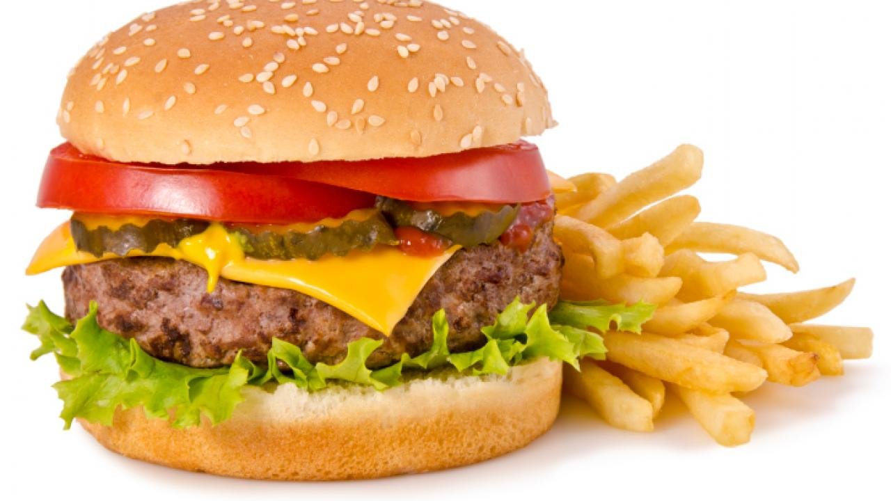
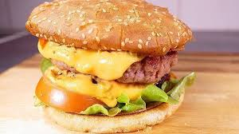
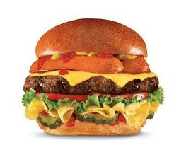
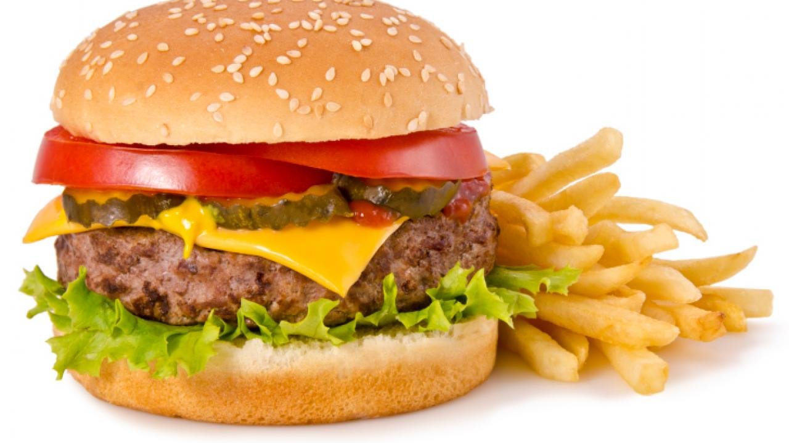
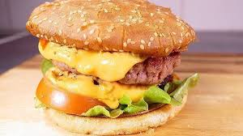
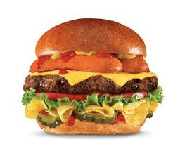
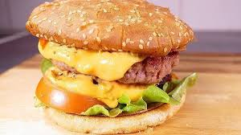
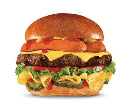
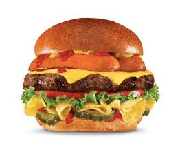

HAMBURGUESA HUERFANA INGREDIENTES PAN DE HAMBURGUESA, CARNE, QUESO, TOMATE ESTOS SON LOS INGREDIENTES DE LA PRIMERA HAMBURGUESA
HAMBURGUESA SIN PEPINILLOS INGREDIENTES PAN, QUESO, CARNE, TOMATE, ESTOS SON LOS INGREDIENTES DE LA SEGUNDA HAMBURGUESA  HAMBURGUESA CON QUESO INGREDIENTES TOMATE, CEBOLLA, CARNE, QUESO DERRETIDO ESTOS SON LOS INGREDIENTES DE LA TERCERA HAMBURGUESA  HAMBURGUESA CON SALCHICHA INGREDIENTES ESTOS SON LOS INGREDIENTES DE LA CUARTA HAMBURGUESA carne, salchicha, queso, pan, carne 
HAMBURGUESA SIN PEPINILLOS INGREDIENTES PAN, QUESO, CARNE, TOMATE, ESTOS SON LOS INGREDIENTES DE LA SEGUNDA HAMBURGUESA 
HAMBURGUESA CON QUESO INGREDIENTES TOMATE, CEBOLLA, CARNE, QUESO DERRETIDO ESTOS SON LOS INGREDIENTES DE LA TERCERA HAMBURGUESA  HAMBURGUESA CON SALCHICHA INGREDIENTES ESTOS SON LOS INGREDIENTES DE LA CUARTA HAMBURGUESA carne, salchicha, queso, pan, carne 
HAMBURGUESA CON QUESO INGREDIENTES TOMATE, CEBOLLA, CARNE, QUESO DERRETIDO ESTOS SON LOS INGREDIENTES DE LA TERCERA HAMBURGUESA 
HAMBURGUESA CON SALCHICHA INGREDIENTES ESTOS SON LOS INGREDIENTES DE LA CUARTA HAMBURGUESA carne, salchicha, queso, pan, carne 
HAMBURGUESA CON SALCHICHA INGREDIENTES ESTOS SON LOS INGREDIENTES DE LA CUARTA HAMBURGUESA carne, salchicha, queso, pan, carne 